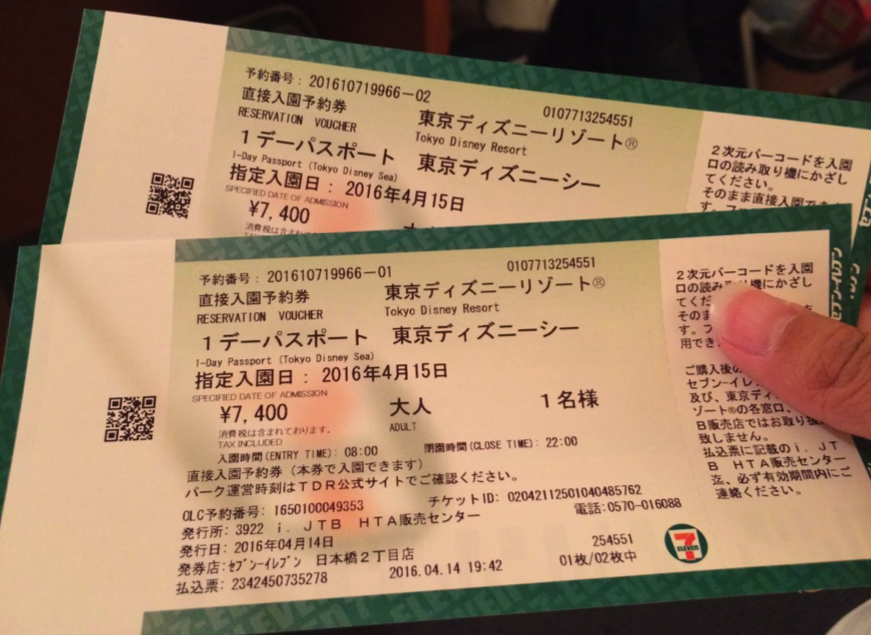
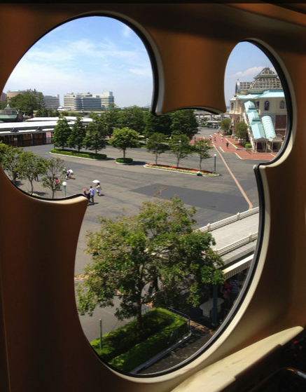
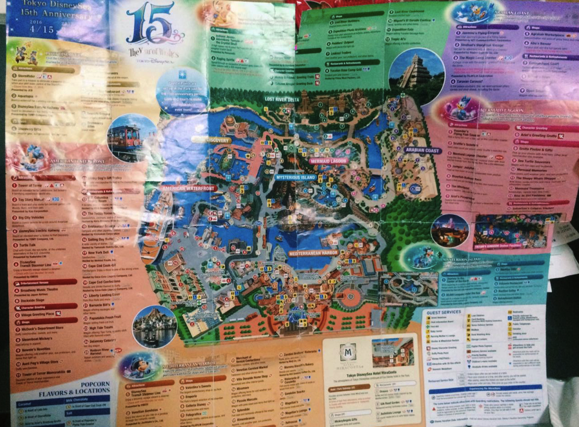
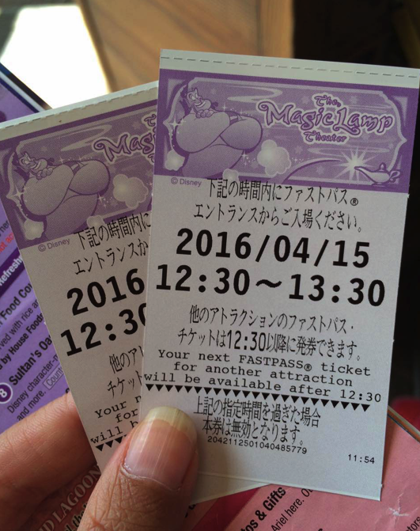
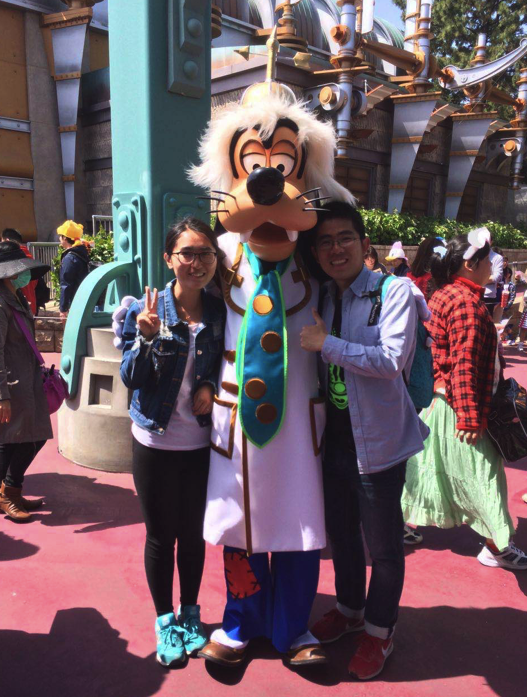
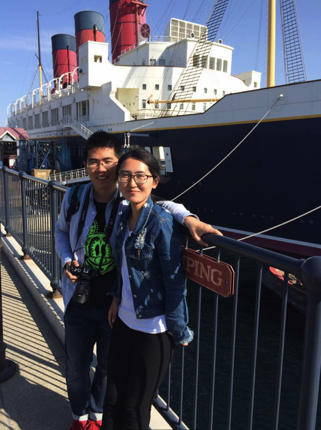
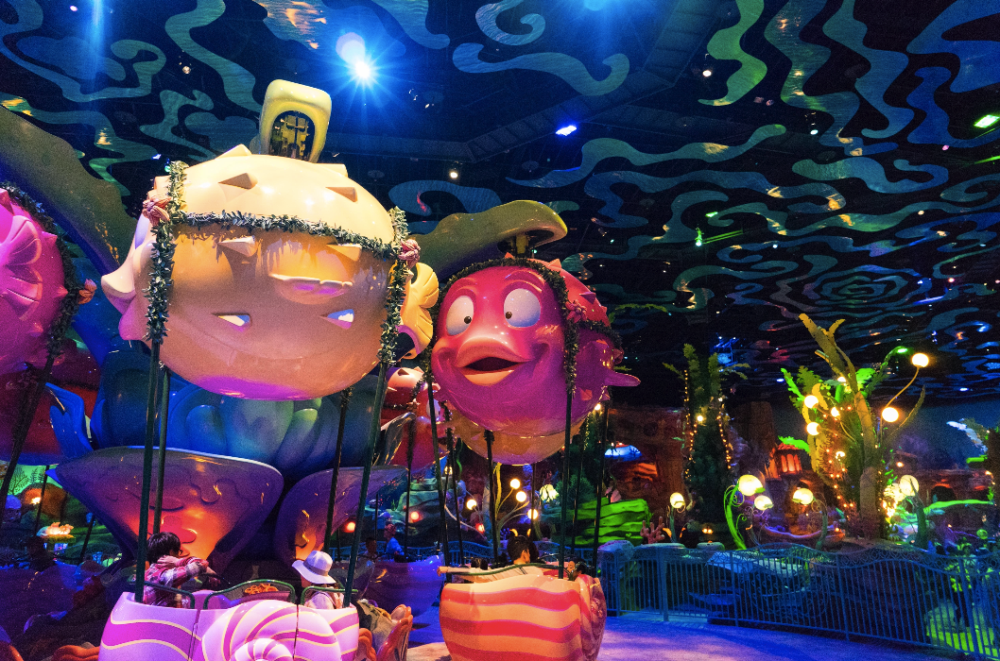
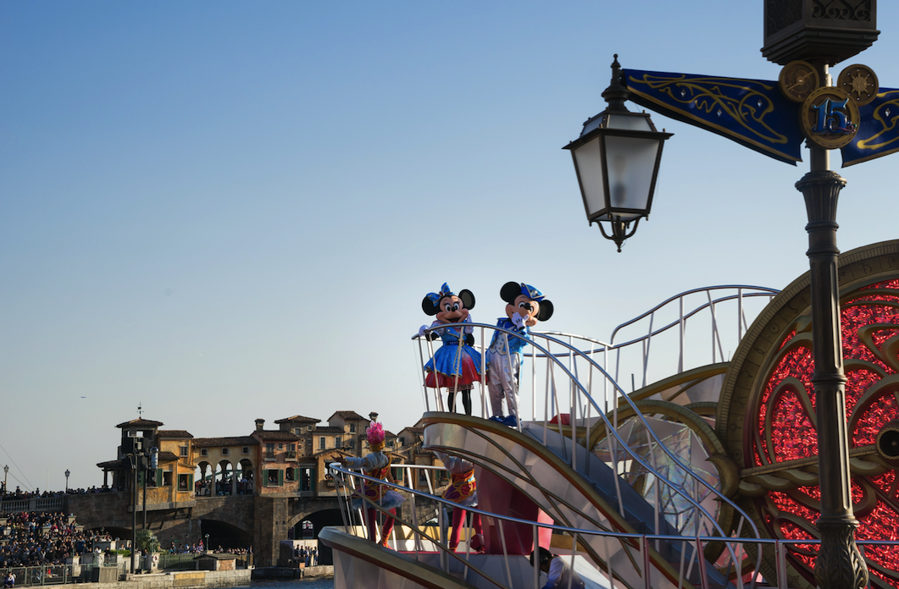
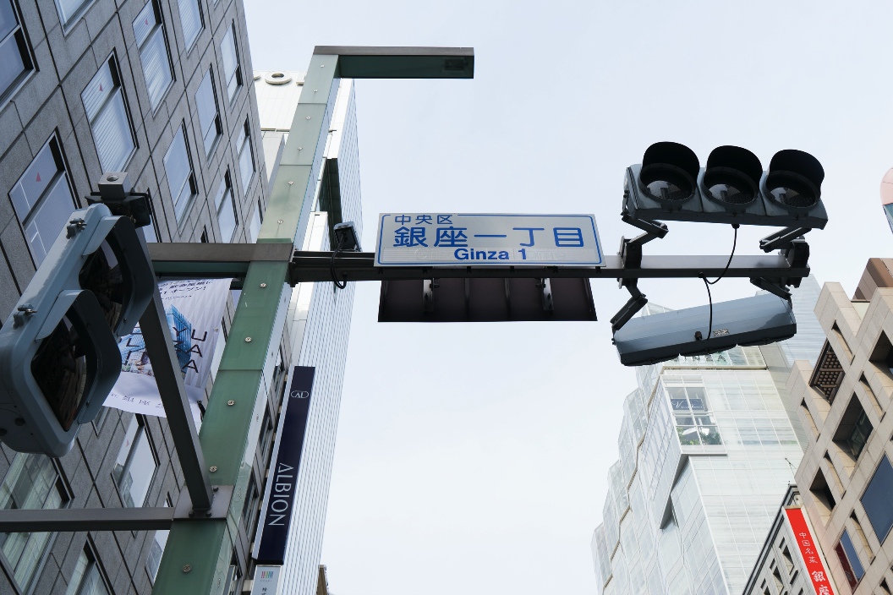
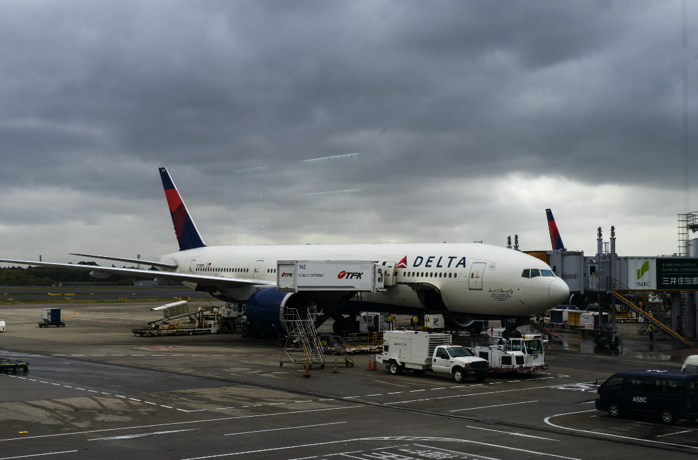

带XML去旅行之日本（下）
最美的风景，在眼内，在心间。 ——HML
东京
看遍了大阪、奈良和京都，又回到了东京。一方面是因为行程失策，导致我们走了回头路，另一方面，确实在东京我还有很多没有来得及写。
迪士尼
东京的三天我们安排了迪士尼和买买买。从来都没去过迪士尼的我们，光凭想象和如雷贯耳的大名总觉得这是一个童话的王国。之前一直因为大阪影视城和迪士尼选哪个而纠结，毕竟认为前者更刺激更适合，而后者更童话更梦幻。最后还是被一颗华丽丽的虚荣心给击败了——东京有世界上唯一的Disney sea，怎么的也得去见见世面——哈哈哈哈。
7-11购买的迪斯尼海洋入园券

很遗憾，去disney这天光顾着玩，没拍几张照片来记录。现在想来有点后悔，不过就像我题记说的那样，无论是自然风光还是人文景观，最美的，永远永远都留在你的脑海里。Tokyo Disney历来是人满为患，统计看来现在Disney Sea的人气逾旺，因此我们特意看了攻略，也实践了攻略，所以，一定意义上这一段算是攻略贴。读者收好不谢，哈。
Disney Resort Line

Disney Sea 英文版地图

可以看到这张地图被我们蹂躏得有些过分了。Disney Sea 分7个主题区域，每个都用不同颜色标注出来，事实证明最里面的失落三角洲已经左下角的美国海滨比较刺激。各片区域之间有小火车和游船相连，游客可以自由乘坐。我认为最好玩的项目是惊魂古塔，没有之二，无论是里面的设计摆设还是营造的气氛，以及带给人的游玩感受都是最棒的。其次是玩具总动员项目的4D游戏，还有地心探险之旅和愤怒双神、风暴骑士。我们几乎是循着“fastpass”的脚步，奔走在路上。何为fastpass？就是you can pass faster with this card的意思。热门的景点（也就是好玩的景点）都会有这样的券。我们的策略就是先尽可能多的拿到fastpass，这样后面就不用排队了。当然fastpass是有时效和领用限制的，在你的前一张fastpass领用时会有下一张可领时间和本张使用时效标注，而且一天当中数量也是限定的，太晚就拿不到了。由于惊魂古塔太好玩，我们在最后又去领了一次fastpass，可惜时间安排到晚上9点多，等不及只能作罢。
Fastpass for magic lamp theater

似乎是运气好我们去的这日游客看起来并不很多，各个项目几乎没排队，当然也得益于我们的fastpass，到最后主会场表演时可以证明游客并不少。
在连续拿了多个fastpass并顺利玩完几乎所有项目之后，我们在阿拉伯海岸吃了一顿咖喱汤饭，很美味，相对日本的物价来说乐园里的食物真的不贵，相比上海刚开业的Disney 50元一个鸡腿的物价来说，很幸福。
和高飞的合影

在Columbia号的合影

童话世界

忘了是美人鱼岛还是阿拉伯海岸
但愿没记错——失落三角洲
从地中海港湾看美国海滨
Mickey and Mickey——还是他们有魅力

整个过程，最后Disney Sea 15周年的表演最激动人心，其实来游玩的大部分是日本人。相对来说，Disney周边的价格略高，但日本人对这些很是热衷，每个人身上都会带走几只Mickey，大概对他们来说便宜也是一个原因。
银座
日本是有名的买买买圣地，之前的几篇我也提到了药妆，除了药妆之外，专柜的日妆、电子产品、机器人以及大红大紫的马桶圈都是国人争相购买的热门。而所到之处无非也就是那么几个：新宿、池袋、秋叶原、银座。最著名的也就是银座了，这个超大型购物天堂。

可惜我本不是个购物狂，甚至连喜欢都算不上，所以这地方对我没有吸引力，要是有个谁求代购倒是难为我了，毕竟不擅长费心费力。不过无论是走到各大商场专柜前还是街道广场上，倒是都能听到中国话，这一刻我感受到国人强大的购买力和熟悉的“亲切感”。
日本印象七
在东京常常可以看到，无论是电铁还是街道中时刻穿梭着匆忙行走的人，他们中很多带着大大的口罩，几乎遮住整张脸只剩下眼睛。当时感到奇异，回头想来这也是一种文化。就像流行的起源有的真的是出于现实的需求。日本樱花遍布全国，春季也是大量花粉症爆发的季节，因此早期的口罩是为了预防花粉症，发展到今天，最初的目的已经越来越弱了，更多的是为了遮掩一些面部的不完美，有的甚至只是追赶潮流，谁说不是呢，明星不都戴口罩吗？
日本电铁等站内到处遍布化妆室，而不是洗手间。里面除了卫生间还有独立的镜子和化妆台，时刻有各个年龄段的女性站在镜前补妆。近距离观察会发现，日本女性小到背着书包穿着校服的高中生，大到花甲鬓白的老妇，各个都有着精致的妆容，都有画眉、腮红、唇膏，几乎无人佩戴眼镜，发型光亮整洁不毛糙，从去上班开始到下班一直保持这个状态，看不到一丝懈怠。中国多爱日妆，有的也是被这样的社会文化感染，但我觉得这还是一个民族的性质特征决定。他们日日拘谨，也许乐在其中，只有自己知道。
还想说几句
人的一生随着社会阅历的改变总是在不断刷新自己对待世物的看法，现在记录下来，提醒我曾经年轻过、我的年少装的什么：
学生时代最遗憾的事莫过于没有好好对待二学位的日语学习，单单拿了个空空的学位到头来发现书到用时方恨少，有句话叫功不唐捐，韩寒说的“懂得很多道理却依然过不好这一生”，就像我现在懂得这个道理却不能保证会在余下的时间里认真对待每一件值得认真的事。我只能说时时鞭策自己是便要的，律己是一个人最崇高的品质。
日本归来爸妈问我，都说日本发达，到底发达在哪，是路更宽还是人们工作压力更小？爸妈有着60后人对祖国发展的欣喜和幸福感。我无法跟他们说日本的发达表现在市政设施还是在社保质量。我认为一个社会的发达不在于建了几条双向8车道几座立交桥、几条盘山公路打通几座大山让大山里的人们感受到大发展。日本的街道窄、车小、工薪阶层压力大，在日本生活你感受不到每天的发展，一方面是因为社会发展到一定阶段之后产生的边际效应，多年后，你会发现我们的差距不在以上的所有，在他们的社会精英和上层建筑忍不能之忍、创不能之新。我们的男人开的是日本车、女人用的是日妆，就连马桶圈都需要去日本抢购。时间的强大就在于他永远能回答你此刻无法理解的问题。
起飞的时候，你不知道是否还会有机会再来一次
